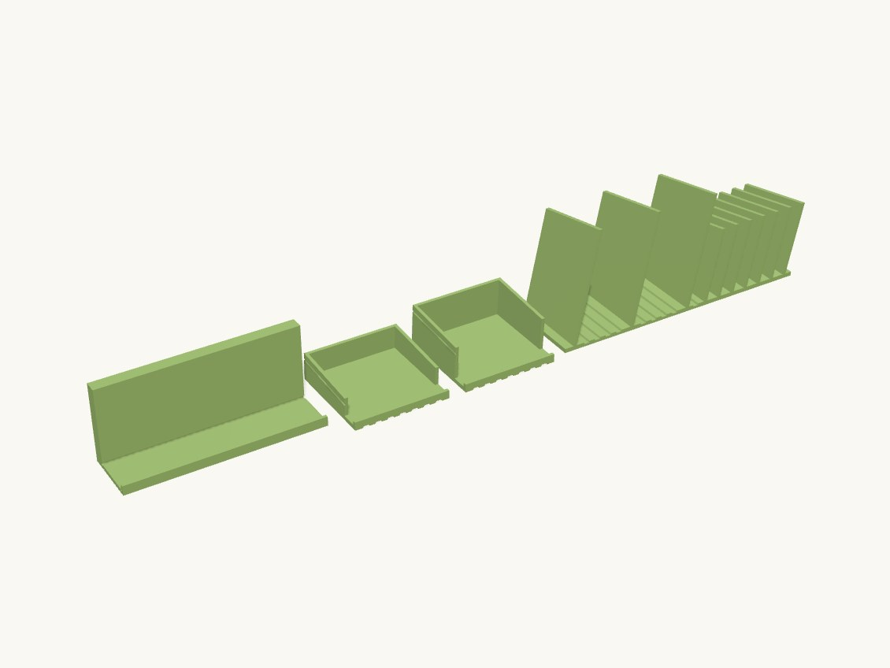

Work / Home

Technical details
Parts, all printed in the orientation returned:
* rail — ONE 140 mm segment of the C-clip that grips the countertop at the sink cutout, carrying a shallow pan whose floor pitches at the basin. The measured 420 mm run will not fit a 270 mm bed, so print RAIL_SEGMENTS (3) of these and butt them end to end: the seam runs across the pan and the water runs along it toward the basin rather than over it. Printed lying on the jaw's OUTBOARD face: that face and the pan floor's outboard end face are coplanar by construction, so the whole part stands off one flat bed face and the only downward surface left is the rim ramp, held at ~41 degrees by RAMP_RATIO. * tile_row1 / tile_row2 — the draining field. **One design, one number apart**: row 2 stands ROW_DROP taller than row 1. Printed deck face down; the walls, the end rib, the drip nose and the snap bead all stand up off a flat TILE_X x TILE_Y bed face, so no supports. * rack — the comb of leaning blades that holds pots, pans and lids on edge. Printed as drawn, base underside on the bed, blades up; the blades are sheared rather than rotated so every root stays flat and the lean is the only overhang in the part.
**How the pieces interconnect.** Nothing seals and nothing screws:
* Tile to tile ACROSS the counter (X): mechanisms.snap_ridge on the +X wall into mechanisms.snap_groove on the -X wall. The field grows along the edge one tile at a time. * Tile to tile BACK from the sink (Y): a lap, not a key. Each row's deck overhangs its own walls by LAP at the downhill edge and lies over the row in front, and each row stands ROW_DROP taller so the whole field is ONE continuous pitched plane. This is why the four-edge symmetric key from the brief could not work: on a flat counter, identical tiles at identical leg height put row 2's downhill edge BELOW row 1's uphill edge by the tile's own drop, and every seam dams. The drop has to go somewhere, and the legs are where it goes. Row n's uphill END_RIB is what the row behind butts against, so the rows cannot creep apart. * Tile field to rail: the front row's deck cantilevers DRIP_OVER past the rail's rim crest and drips into the pan. RIM_H is 4 mm rather than 10 for exactly this. * Rack to tile: it stands on the deck and inherits its pitch, so its base only has to move water off its own front edge onto the tile downstream. That is why there is no sloped base and no spout here — the row already has one. Its blade tops slope TOP_SLOPE_DEG toward the sink on top of the deck's own pitch, because a rim resting across level blade tops sits horizontally and holds exactly the ring of water this rack exists to drain.
Water goes: rack -> row 2 -> row 1 -> pan -> basin, each stage handing off by overhanging the next.
Assumptions, all of them parameters (see params.py):
* **PLA throughout, at the user's request.** The three write-ups specified PETG for the splash zone. PLA is defensible for the tiles (keyed, not sprung, nothing hot lands on them); on the rack it is the user's accepted risk, and a hot pan straight off the hob is what would find it. * **The counter is measured**: 30 mm slab, 420 x 420 mm of counter. UNDER_REACH (4 mm) is the one number still guessed — the exposed underside at the cutout that the return lip tucks into. Measure it before printing the rail; nothing else in the system depends on it. * Two rows of 70 mm tiles use 181 mm of the 420 mm depth. Depth is limited by leg height, not by counter: every row back costs ROW_DROP (11 mm) because the lap must clear the deck and drip nose of the row in front. 3 rows would put the back row on 35 mm legs; that is the practical end. * A full field is RAIL_SEGMENTS x rail, TILES_PER_ROW x each row (6 + 6), and one rack. * Rack sized for 2 pot bays at 48 mm and 6 lid slots at 12 mm; real pot and lid sizes would set these properly.
Open, and only a print answers them: whether a big pot rim-down sits stably across 48 mm bays or wants a concave blade top, and whether the tiles need an anti-slip pad where they meet the stone.
Parts
| Part | Size (mm) | Volume | Thinnest wall | Printability |
|---|---|---|---|---|
| rail | 140 × 41.915 × 58 | 49.3 cm³ | 1.2 mm | passes |
| tile_row1 | 70.6 × 70.241 × 21.051 | 21.9 cm³ | 1.65 mm | passes |
| tile_row2 | 70.6 × 70.241 × 32.14 | 26.7 cm³ | 1.65 mm | passes |
| rack | 204.971 × 60 × 88.2 | 126.9 cm³ | 2 mm | passes |
Engineering views
Downloads
- drain_system.3mfwhole plate · 64 KB
- rack.stepSTEP · 314 KB
- rack.stlSTL · 16 KB
- rail.stepSTEP · 64 KB
- rail.stlSTL · 50 KB
- tile_row1.stepSTEP · 183 KB
- tile_row1.stlSTL · 34 KB
- tile_row2.stepSTEP · 183 KB
- tile_row2.stlSTL · 34 KB
Library parts used
Parametric components shared with the other designs; see the parts library.
| Component | What it does | Printed in |
|---|---|---|
Snap groovemechanisms.snap_groove | Negative (subtract me) half-round groove matching snap_ridge, cut into a wall face at y=0 going into -Y. | PETG, PLA |
Snap ridgemechanisms.snap_ridge | Half-round snap ridge (bead) running along X, protruding in +Y from a wall face at y=0; sits on a lid lip. | PETG, PLA |
Edge clipprimitives.edge_clip | C-profile clip that grips a square panel or countertop edge: saddle over the top, jaw down the cut face, return lip under. | not yet |
Groove fieldprimitives.groove_field | Negative (subtract me) field of self-supporting drain grooves running along Y; groove mouths at z=0, cutting down. | not yet |
Slot rackprimitives.slot_rack | Row of leaning blades with the slots between them, standing on z=0 and centred on the origin in X. | not yet |
Source: models/drain_system · built 2026-09-09 14:53
Sink-side drain set
An edge rail, drain tiles and a pot rack that turn the counter beside an undermount sink into a drying area.
The rail clips over the stone edge with no drilling and pitches water back into the basin. The 420 mm run is printed in three segments that butt together, because it is longer than the printer bed.
- Size
- 205 × 60 × 88 mm
- Print plate
- 205 × 192 × 88 mm
- Parts
- 4
- Filament (PLA)
- about 260 g
- Print time
- about 17.5 h
- Status
- Ready to print
Want it in another size, colour or material? Say so in the request: fitting it to your object is a $5 adjustment, and you see the revised design before it's printed.
Measure it, describe it, and we'll draw it.
Requests take a few minutes. You'll get the design and a price back before anything is printed.